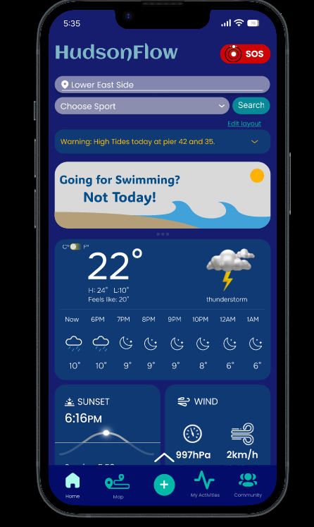
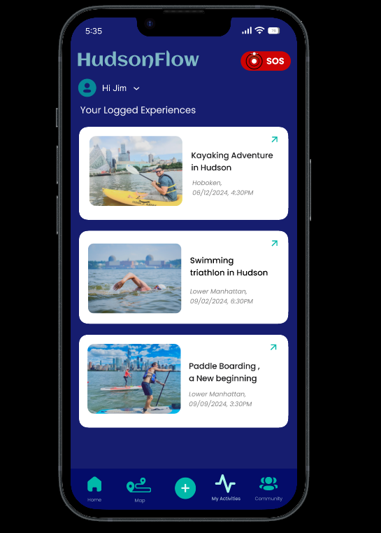
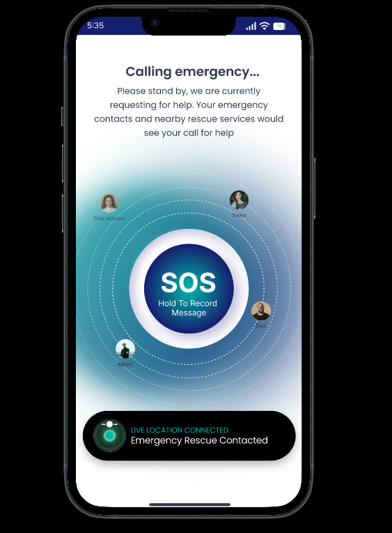
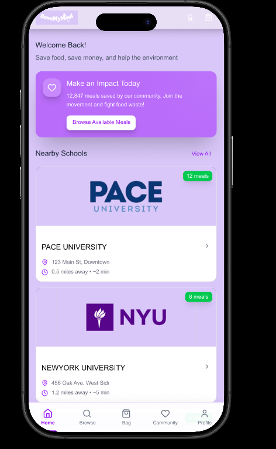
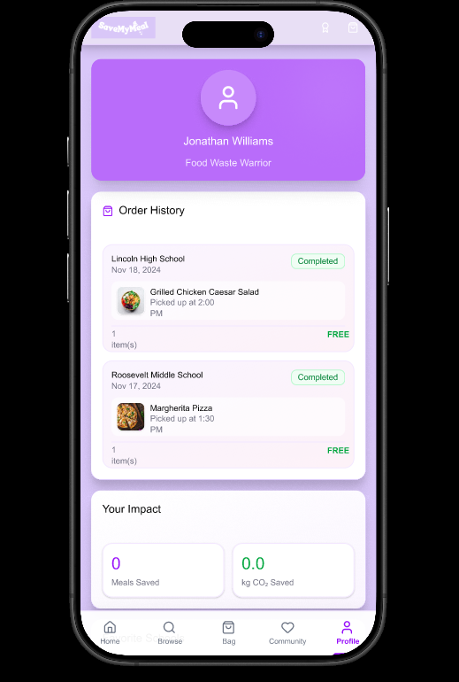
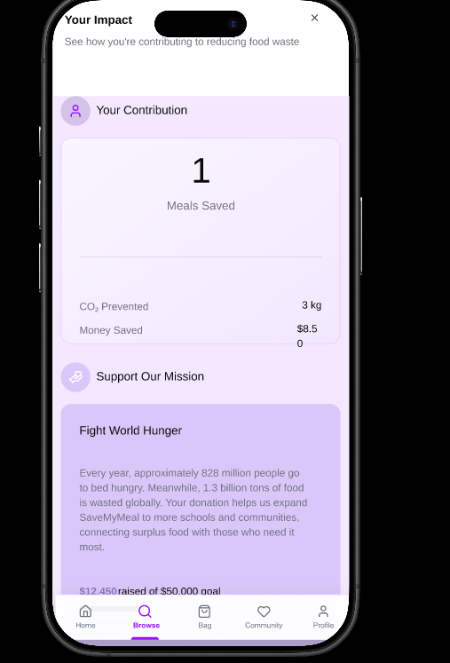
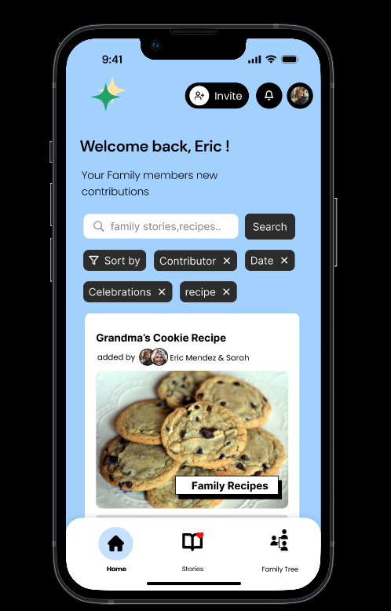
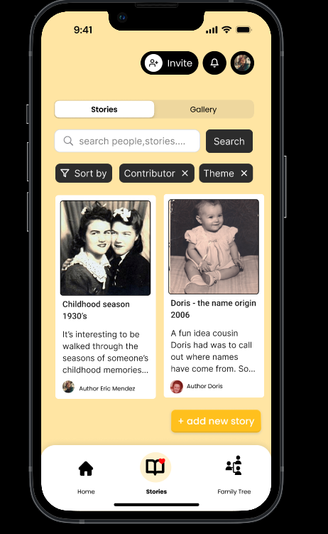
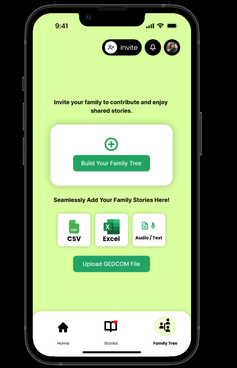
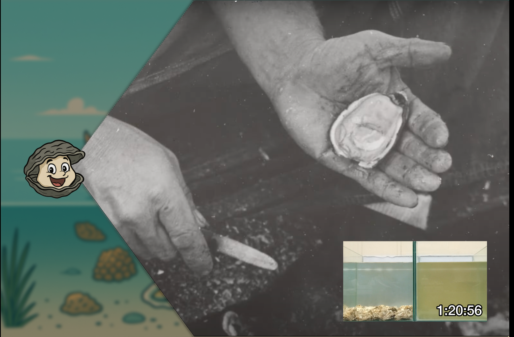

Featured Portfolio 🎨
Interactive prototypes, empirical field research, and user experience systems.
Hudson Flow



Mobile platform translating hyper-local water quality and weather into instant activity safety verdicts, pier-level high tide alerts, emergency SOS dispatch, and user trip logs.
Save My Meal (Team Zero Hunger)



Community food-rescue platform designed to eliminate university campus food waste by connecting students with surplus meals from Pace and NYU while tracking personal carbon savings.
Memoir Tree



Translating qualitative research on grief, storytelling, and healing into an empathetic space for preserving multi-generational family recipes, audio memories, and genealogical records.
City Island Digital Museum

Synthesized qualitative field research from 10+ local residents and visitors to design an interactive museum installation combining oyster heritage archives, filtration data, and hardware navigation.
Amazonian Açaí Jam Packaging

Branding and bio-based packaging strategy for the HORECA sector developed with the Ayakuná NGO to support Amazonian biodiversity and women entrepreneurs.